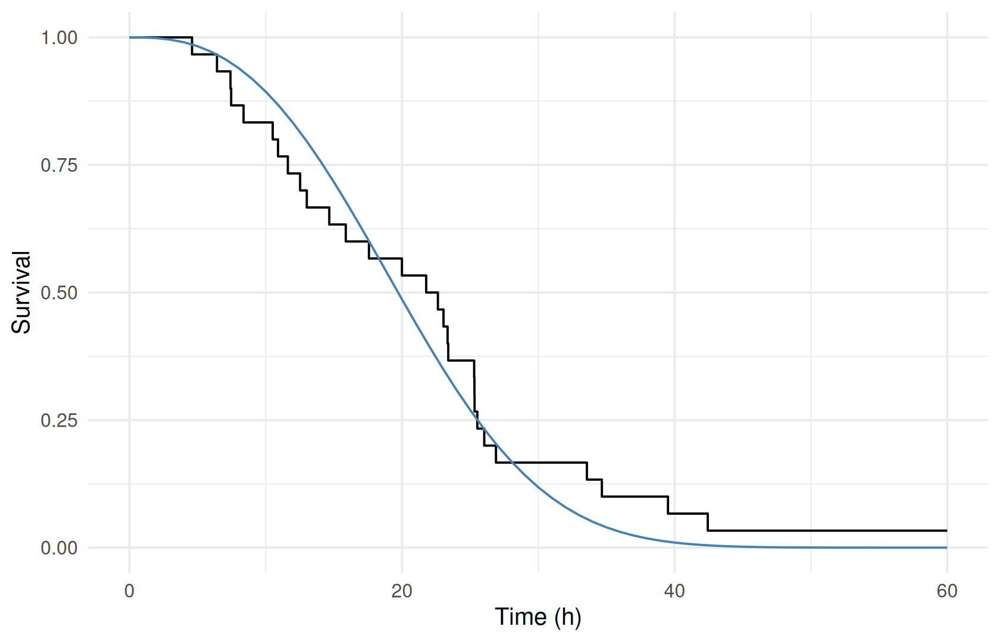
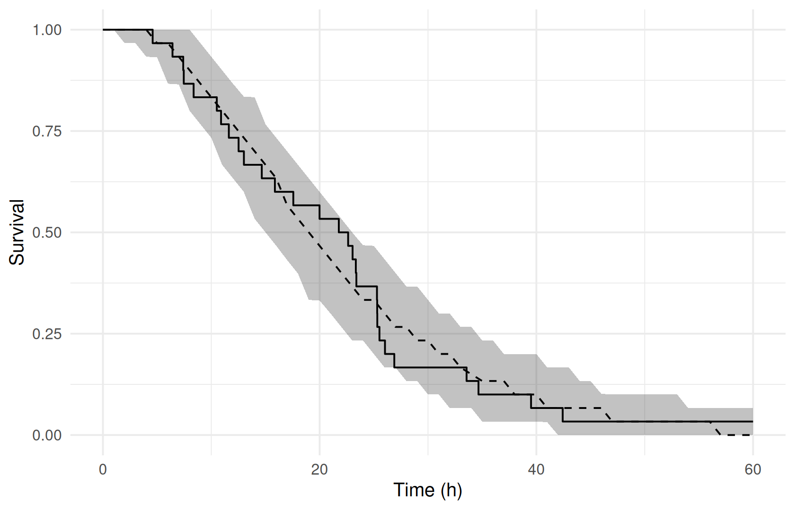
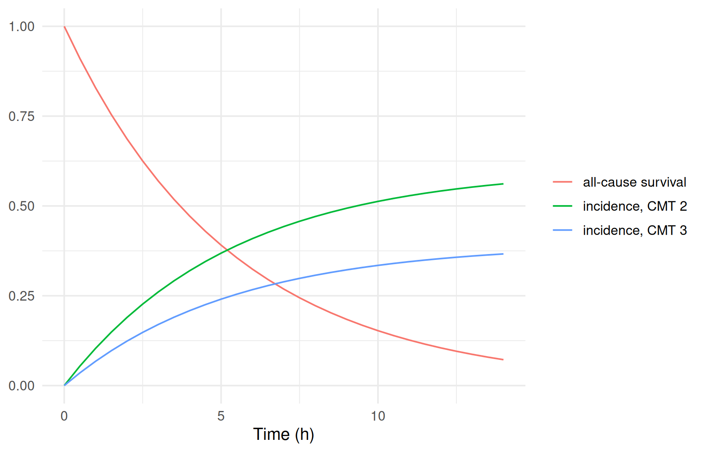

weibull <- ferx_example("tte_weibull")
tte_dir <- book_tempdir("tte")
weibull_data <- read.csv(weibull$data, na.strings = ".")
head(weibull_data, 4)
#> ID TIME DV EVID AMT CMT RATE MDV
#> 1 1 23.04 1 0 0 2 0 0
#> 2 2 25.31 1 0 0 2 0 0
#> 3 3 4.59 1 0 0 2 0 0
#> 4 4 26.89 1 0 0 2 0 0
count(weibull_data, DV)
#> DV n
#> 1 0 1
#> 2 1 29Time-to-event models
Where you are
Time-to-event (TTE) endpoints record when an event happens, such as dropout, a clinical event or death, or that it had not happened by the end of follow-up. ferx models them with an [event_model] block: a parametric hazard, with random effects and covariates in its parameters, fitted with a survival likelihood. This chapter fits the bundled examples: exponential, Weibull and Gompertz hazards, competing risks, and a hazard driven by the drug concentration. It then predicts survival curves and checks the models by simulation.
WarningMaturity: beta
ferx-core labels time-to-event endpoints beta. See feature maturity.
The data
A TTE row is an observation (EVID = 0) on the event model’s CMT. TIME is the event or censoring time and DV says which: 1 for an event, 0 for right censoring. tte_weibull has one row for each of 30 subjects, with follow-up to 60 hours:
Minimal runnable call
A TTE-only model needs [parameters], [event_model] and [fit_options]. The block names the endpoint’s cmt, the hazard family, and the family’s parameters as expressions of thetas, etas and covariates:
invisible(ferx_model_get_section(weibull$model, "parameters"))
#> # [parameters]
#> theta TVSCALE(20.0, 0.1, 500.0)
#> theta TVSHAPE(1.5, 0.1, 10.0)
#>
#> omega ETA_SCALE ~ 0.04
invisible(ferx_model_get_section(weibull$model, "event_model"))
#> # [event_model]
#> cmt = 2
#> family = weibull
#> scale = TVSCALE * exp(ETA_SCALE)
#> shape = TVSHAPE
fit_weibull <- ferx_fit(weibull$model, weibull$data, verbose = FALSE)
fit_weibull$estimates[, c("estimate", "rse_pct")]
#> estimate rse_pct
#> TVSCALE 22.5990078 12.20176
#> TVSHAPE 2.6782453 34.71776
#> ETA_SCALE 0.1645736 76.11453According to the model file, the data were simulated with TVSCALE 20, TVSHAPE 1.5 and a variance of 0.04. With 30 subjects the shape is poorly determined.
Reading the result: survival curves
ferx_predict_survival() evaluates the survival function S(t), the cumulative hazard H(t) and the hazard h(t) at the requested times, for each subject and TTE compartment. With fit, it uses the fitted thetas (random effects at 0); without, the model file’s initial values. Each subject also gets a median and mean survival time:
survival_curve <- ferx_predict_survival(weibull$model, weibull$data, times = seq(0, 60, by = 1), fit = fit_weibull)
filter(survival_curve, ID == 1, TIME %in% c(0, 10, 20, 30, 40)) |>
select(TIME, survival, cum_hazard, hazard, median_survival, mean_survival)
#> TIME survival cum_hazard hazard median_survival mean_survival
#> 1 0 1.000000000 0.0000000 0.00000000 19.70865 20.09144
#> 2 10 0.893479395 0.1126320 0.03016561 19.70865 20.09144
#> 3 20 0.486299077 0.7209315 0.09654156 19.70865 20.09144
#> 4 30 0.118179682 2.1355491 0.19065081 19.70865 20.09144
#> 5 40 0.009906979 4.6145158 0.30897013 19.70865 20.09144The Kaplan–Meier estimate of the observed data, from the survival package, is the natural comparison:
library(survival)
km <- survfit(Surv(TIME, DV) ~ 1, data = weibull_data)
km_data <- data.frame(TIME = c(0, km$time), survival = c(1, km$surv))
ggplot() +
geom_step(data = km_data, aes(TIME, survival)) +
geom_line(data = filter(survival_curve, ID == 1), aes(TIME, survival), colour = "steelblue") +
labs(x = "Time (h)", y = "Survival")
The model curve is for a subject with random effect 0. With between-subject variability, the population survival curve is flatter than that, which is why a simulation-based check (below) is the better comparison.
sdtab has no rows for a TTE-only model: there are no concentration-type predictions or residuals.
nrow(fit_weibull$sdtab)
#> [1] 0Options that matter
Key in [event_model]
|
Meaning |
|---|---|
cmt |
The CMT value of the event rows |
family |
exponential, weibull or gompertz
|
scale (alias rate for exponential) |
Rate (exponential) or characteristic time (Weibull) |
shape |
Weibull shape |
alpha, gamma
|
Gompertz baseline hazard and growth rate |
loghr |
A proportional-hazards term that multiplies the hazard by exp(loghr)
|
hazard |
A hazard expression of ODE states and individual parameters (instead of family), for a drug-driven hazard |
type, clock
|
tte (default) or repeated events (rtte), with a forward or reset clock |
| Data | Meaning |
|---|---|
DV = 1 / DV = 0
|
Event / right-censored at TIME
|
DV = 2 |
Right bound of an interval-censored event (after a DV = 0 row with the left bound) |
TENTRY |
Entry time for left truncation (delayed entry) |
| Function | Argument | Meaning |
|---|---|---|
ferx_predict_survival() |
model, data
|
Model with at least one [event_model], and its dataset |
times |
Times at which to evaluate S(t), H(t) and h(t) | |
fit |
Use the fitted thetas instead of the model file’s | |
ferx_simulate() |
horizon |
End of follow-up (administrative censoring) for simulated event times |
Named blocks, [event_model NAME], declare several endpoints. The ferx-core event model and TTE estimation pages document the families, interval censoring and repeated events.
Variants
Exponential and Gompertz hazards
tte_exponential has a constant hazard. It still carries the placeholder PK, error and individual-parameter blocks that older TTE models needed. tte_gompertz has a hazard that grows exponentially with time:
exponential <- ferx_example("tte_exponential")
gompertz <- ferx_example("tte_gompertz")
invisible(ferx_model_get_section(exponential$model, "event_model"))
#> # [event_model]
#> cmt = 2
#> family = exponential
#> # Note: [event_model] expressions are evaluated in the theta/eta/covariate
#> # namespace — not in the [individual_parameters] namespace. Write the full
#> # theta/eta expression here rather than referencing LAMBDA directly.
#> scale = TVLAMBDA * exp(ETA_LAMBDA)
invisible(ferx_model_get_section(gompertz$model, "event_model"))
#> # [event_model]
#> cmt = 2
#> family = gompertz
#> alpha = TVALPHA
#> gamma = TVGAMMA * exp(ETA_GAMMA)
fit_exponential <- ferx_fit(exponential$model, exponential$data, verbose = FALSE)
#> Warning in .ferx_compute_cor_matrix(result$cov_matrix): One or more diagonal
#> elements are non-positive; correlation matrix may not be meaningful.
fit_gompertz <- ferx_fit(gompertz$model, gompertz$data, verbose = FALSE)
fit_exponential$estimates[c("TVLAMBDA", "ETA_LAMBDA"), c("estimate", "rse_pct")]
#> estimate rse_pct
#> TVLAMBDA 0.03318271 26.73377
#> ETA_LAMBDA 0.29171763 283.56767
fit_gompertz$estimates[, c("estimate", "rse_pct")]
#> estimate rse_pct
#> TVALPHA 0.001874227 54.74303
#> TVGAMMA 0.053382863 22.93218
#> ETA_GAMMA 0.106678875 51.23051The model files give the simulation values: an exponential rate of 0.05 with variance 0.09, and Gompertz TVALPHA 0.002, TVGAMMA 0.05 with variance 0.04. The typical parameters are in range, but the between-subject variances of these single-event datasets are poorly determined. With one event per subject, frailty is hard to separate from the hazard’s shape.
A simulation-based check
ferx_simulate() draws an event time for each subject from the fitted model. OBSERVED is 1 for an event and 0 for censoring at horizon. The Kaplan–Meier curves of 200 simulated datasets give an interval to compare with the observed curve:
simulated <- ferx_simulate(weibull$model, weibull$data, n_sim = 200, seed = 1, fit = fit_weibull, horizon = 60)
head(simulated, 3)
#> DRAW SIM ID TIME CMT IPRED DV_SIM OBSERVED
#> 1 1 1 1 30.594957 2 NaN NaN 1
#> 2 1 1 2 26.391873 2 NaN NaN 1
#> 3 1 1 3 4.612634 2 NaN NaN 1
grid <- seq(0, 60, by = 1)
km_on_grid <- function(time, status) {
summary(survfit(Surv(time, status) ~ 1), times = grid, extend = TRUE)$surv
}
simulated_km <- simulated |>
group_by(SIM) |>
group_modify(~ data.frame(TIME = grid, survival = km_on_grid(.x$TIME, .x$OBSERVED))) |>
group_by(TIME) |>
summarise(lo = quantile(survival, 0.05), mid = median(survival), hi = quantile(survival, 0.95))
ggplot(simulated_km, aes(TIME)) +
geom_ribbon(aes(ymin = lo, ymax = hi), alpha = 0.3) +
geom_line(aes(y = mid), linetype = "dashed") +
geom_step(data = km_data, aes(TIME, survival)) +
labs(x = "Time (h)", y = "Survival")
Without horizon, simulated event times are not censored at the end of follow-up, and some lie far beyond it:
fit_exp_sim <- ferx_simulate(exponential$model, exponential$data, n_sim = 1, seed = 1, fit = fit_exponential)
range(fit_exp_sim$TIME)
#> [1] 1.155255 162.121654
range(ferx_simulate(exponential$model, exponential$data, n_sim = 1, seed = 1, fit = fit_exponential,
horizon = 30)$TIME)
#> [1] 1.155255 30.000000Competing risks
tte_competing_risks has two causes, each with its own named event block and compartment, and a shared frailty ETA_F. Each subject has one row per cause at the same time: DV = 1 for the cause that happened, DV = 0 for the other:
competing <- ferx_example("tte_competing_risks")
head(read.csv(competing$data, na.strings = "."), 4)
#> ID TIME DV EVID AMT CMT RATE MDV
#> 1 1 12.2538 1 0 0 2 0 0
#> 2 1 12.2538 0 0 0 3 0 0
#> 3 10 9.3770 1 0 0 2 0 0
#> 4 10 9.3770 0 0 0 3 0 0
invisible(ferx_model_get_section(competing$model, "parameters"))
#> # [parameters]
#> theta TVLAMBDA_A(0.10, 0.001, 10.0)
#> theta TVLAMBDA_B(0.06, 0.001, 10.0)
#>
#> omega ETA_F ~ 0.25
fit_competing <- ferx_fit(competing$model, competing$data, verbose = FALSE)
fit_competing$estimates[, c("estimate", "rse_pct")]
#> estimate rse_pct
#> TVLAMBDA_A 0.1136930729 20.88753
#> TVLAMBDA_B 0.0741904757 25.85541
#> ETA_F 0.0001833531 5169.07342The two rates recover the simulation values of the model file (0.10 and 0.06), while the frailty variance collapses. The model file notes that it is weakly identified with FOCEI. For several causes, ferx_predict_survival() adds the cumulative incidence of each cause (cif) and the all-cause survival (survival_all); the incidences and the all-cause survival add up to 1:
competing_curve <- ferx_predict_survival(competing$model, competing$data, times = seq(0, 14, by = 0.5), fit = fit_competing)
subject <- filter(competing_curve, ID == first(ID))
subject |>
group_by(TIME) |>
summarise(total = sum(cif) + first(survival_all)) |>
summarise(min_total = min(total), max_total = max(total))
#> # A tibble: 1 × 2
#> min_total max_total
#> <dbl> <dbl>
#> 1 1 1
bind_rows(mutate(subject, curve = paste("incidence, CMT", CMT), value = cif),
distinct(subject, TIME, survival_all) |> mutate(curve = "all-cause survival", value = survival_all)) |>
ggplot(aes(TIME, value, colour = curve)) +
geom_line() +
labs(x = "Time (h)", y = NULL, colour = NULL)
A drug-driven hazard: joint PK and TTE
In pktte_joint the hazard depends on the drug concentration. hazard = is written with ODE states and individual parameters; ferx adds the cumulative hazard as an ODE state and fits it together with the concentrations:
joint <- ferx_example("pktte_joint")
invisible(ferx_model_get_section(joint$model, "individual_parameters"))
#> # [individual_parameters]
#> CL = TVCL * exp(ETA_CL)
#> V = TVV
#> KA = TVKA
#> H0 = TVH0
#> BETA = TVBETA
invisible(ferx_model_get_section(joint$model, "event_model"))
#> # [event_model]
#> cmt = 3
#> hazard = H0 * exp(BETA * (central / V))
filter(read.csv(joint$data, na.strings = "."), ID == 1)
#> ID TIME DV EVID AMT CMT RATE MDV
#> 1 1 0.0 NA 1 100 1 0 1
#> 2 1 2.0 75 0 NA 2 0 0
#> 3 1 8.0 49 0 NA 2 0 0
#> 4 1 9.5 1 0 0 3 0 0
fit_joint <- ferx_fit(joint$model, joint$data, verbose = FALSE)
fit_joint$estimates[, c("estimate", "rse_pct")]
#> estimate rse_pct
#> TVCL 0.508830913 245.446067
#> TVV 4.775405725 245.431674
#> TVKA 0.929755697 3.842933
#> TVH0 0.100286233 98.291359
#> TVBETA -0.114258735 262.628345
#> ETA_CL 0.004928502 81.838492
#> PROP_ERR 0.031167552 29.566940With 6 subjects, clearance, volume and the concentration effect TVBETA are not determined (relative standard errors near 300%). The example shows the syntax; a real analysis needs more data. sdtab holds the concentration rows. Simulating a drug-driven hazard needs horizon:
try(ferx_simulate(joint$model, joint$data, n_sim = 1, seed = 1, fit = fit_joint))
#> Error simulating: ODE-accumulated TTE (joint PK-TTE) simulation requires a finite, positive administrative horizon: set `[simulation] horizon` (or `SimulateOptions.horizon`). A drug-driven hazard can vanish, so there is no implicit observation window.
#> NULL
joint_sim <- ferx_simulate(joint$model, joint$data, n_sim = 1, seed = 1, fit = fit_joint, horizon = 24)
filter(joint_sim, ID == 1)
#> DRAW SIM ID TIME CMT IPRED DV_SIM OBSERVED
#> 1 1 1 1 2 2 72.45901 74.13171 NaN
#> 2 1 1 1 8 2 43.96953 43.79529 NaN
#> 3 1 1 1 24 3 NaN NaN 0The simulation returns the concentration rows and, per subject, one event row on CMT 3 with the event or censoring time.
Delayed entry
When subjects are known to be event-free until they enter the study, the likelihood should condition on that. A TENTRY column gives the entry time. In a copy of the Weibull data every subject enters at 4 hours (before the first event, at 4.59 hours):
entry_data <- mutate(weibull_data, TENTRY = 4)
entry_file <- file.path(tte_dir, "tte_weibull_entry.csv")
write.csv(entry_data, entry_file, row.names = FALSE)
fit_entry <- ferx_fit(weibull$model, entry_file, verbose = FALSE)
rbind(from_time_0 = fit_weibull$theta, entry_at_4 = fit_entry$theta)
#> TVSCALE TVSHAPE
#> from_time_0 22.59901 2.678245
#> entry_at_4 22.54160 2.175419The shape estimate changes, because the time from 0 to 4 hours no longer counts as survival evidence.
Repeated events
type = rtte models events that can happen more than once per subject, with the clock key choosing total time or time since the last event. Fits from R work, but no bundled ferx-r example uses repeated events. See the ferx-core repeated events section, which also recommends SAEM or IMP for their frailty variance.
Pitfalls
-
ferx_model_validate()rejects compact TTE models at this build. Models without[structural_model],[error_model]and[individual_parameters]are reported as invalid, although they fit:weibull_check <- ferx_model_validate(weibull$model, weibull$data) #> Validating: tte_weibull.ferx #> data: tte_weibull.csv #> #> Sections present: #> parameters [ok] #> individual_parameters [MISSING] #> structural_model [MISSING] #> error_model [MISSING] #> event_model [ok] (optional) #> fit_options [ok] (optional) #> #> Result: INVALID #> * Missing required section: [individual_parameters] #> * Missing required section: [structural_model] #> * Missing required section: [error_model] weibull_check$ok #> [1] FALSEtte_exponential, which keeps the placeholder blocks, validates. Set
horizonwhen simulating. Without it, analytical hazards are not censored at the end of follow-up, and a drug-driven hazard cannot be simulated.A typical-subject curve is not the population curve. Compare observed Kaplan–Meier curves with simulations, not with
ferx_predict_survival()at random effect 0.Covariates in a hazard must be constant within a subject. A time-varying covariate in the hazard stops the fit.
Frailty variances are weakly identified with one event per subject. Check their standard errors, and consider SAEM or IMP.
Warnings you may see here
-
simulation(warning): a problem in individual simulated subjects, such as a non-positive hazard, which ferx turns into censoring at the horizon. The messages are attached to the result asattr(sim, "simulation_warnings"). Here a copy of the Weibull model subtracts 25 from the scale, which makes it negative for most subjects:degenerate_model <- file.path(tte_dir, "tte_weibull_negative_scale.ferx") writeLines(sub("scale = TVSCALE * exp(ETA_SCALE)", "scale = TVSCALE * exp(ETA_SCALE) - 25", readLines(weibull$model), fixed = TRUE), degenerate_model) degenerate <- suppressWarnings(ferx_simulate(degenerate_model, weibull$data, n_sim = 1, seed = 1, horizon = 60)) length(attr(degenerate, "simulation_warnings")) #> [1] 27 substr(attr(degenerate, "simulation_warnings")[1], 1, 120) #> [1] "W_TTE_DEGENERATE_HAZARD: subject '2' (CMT=2) drew a non-positive / non-finite effective hazard rate; no event was genera" count(degenerate, OBSERVED) #> OBSERVED n #> 1 0 27 #> 2 1 3The same diagnostics are raised as one R warning unless suppressed.
Summary
- Event rows carry
TIMEandDV(1 event, 0 censored) on the[event_model]’scmt. - Choose a hazard
family(exponential, Weibull, Gompertz), or write a drug-drivenhazardin an ODE model. -
ferx_predict_survival()gives S(t), H(t), h(t) and, for competing risks, cumulative incidences. - Check TTE models with Kaplan–Meier curves of simulations, using
horizonfor follow-up. -
TENTRYhandles delayed entry,DV = 2interval censoring, andtype = rtterepeated events.
Next: Adaptive dosing and TDM strategies simulates dosing that responds to measurements.
TipReference
- R help:
?ferx_predict_survival,?ferx_simulate(horizon),?ferx_fit - ferx-core: event model, TTE estimation